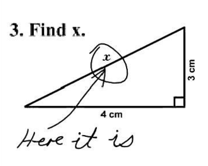
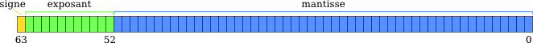

L'encodage
ou l'art de décoder la matrix
Présentation par Arnaud Brunet
Questions / Remarques
Questions / Remarques
Il n'y a pas de questions bêtes

Questions / Remarques
Il n'y a pas de honte à ne pas savoir

Questions / Remarques
Je peux me tromper

Parlons l'ordinateur
Parlons l'ordinateur
= traitement de signaux électriques

=> BINAIRE
Binaire
Bits 0 / 1
Groupés en mots de longueur variable
=> nombres ∈ ℕ
C'est quoi alors une lettre ?
=> un nombre
Qu'est-ce que l'encodage ?
L'art d'associer le bon nombre à la bonne lettre
Les normes
∃ trop
souvent incompatible entre elles
ASCII
mot de 7 bits
que 128 caractères
seulement 95 utilisables
Les codepages
utilisation du 8ième bit
∃ trop
comptabible ASCII
incompatibilité entre eux
spécifique constructeurs
ISO-8859-1 / ISO-8859-15
standards sur 8 bits
comptabibles ASCII
pas compatible avec Windows CP-1252
ISO-XXXX
une norme par langue
ISO-8859-1...16 : europe occidental, central, du sud, du nord, cyrillique, arabe, grec, hébreu, turc, nordique, thaï, devanāgarī, balte, celtique, €, europe du sud-est
+ les autres langues : JIS X 0213 pour le japonnais, ...
Une norme pour les gouverner toutes. Une norme pour les consolider,
Une norme pour les réunifier toutes et dans les convensions les lier
A l'ISO où s'étendent les normes
FAUX !
ISO-10646 vs Unicode
ISO-10646
qui connait ?
plus d'1 million de caractères
nomme les caractères
Unicode
aujourd'hui basé sur ISO-10646
règles de collation (interclassement)
UTF-8, UTF-16, UTF-32
UTF-8
UTF-8
compatible avec ASCII
de 1 à 4 octets / char
+ efficace pour nous
- difficile à lire
- couteux pour les autres
- sous ensemble de ISO-10646
+ mais largement suffisant
BOM
Byte Order Mark
En début de fichier
EF BB BF = 
optionnel
UTF-16
de 1 à 2 mots de 16 bits / char
+ efficace pour les autres
BOM : big ou little endian
FE FF ou FF FE en début de fichier
Problèmes ?

connaitre l'encodage de l'origine
spécifier l'encodage lors de la lecture
Futur probleme
connaitre l'encodage de destination
spécifier l'encodage lors de l'écriture
Cas particuliers
XML
<?xml version="1.0" encoding="UTF-8" ?>
HTML
Content-Type: text/html; charset=UTF-8
<meta charset="UTF-8">
Javascript
embedded = celui de la page
externe = header HTTP
URL
que ASCII
dépend du serveur
Tomcat = ISO-8859-1
mais recommande UTF-8
URIEncoding="UTF-8" + filtre + response.setContentType("text/html; charset=UTF-8")
déja fait par spring-boot
Questions / Remarques
binaire = nombres ∈ ℕ
C'est quoi un nombre décimal ?
=> des entiers naturels
IEEE-754
3 nombres : signe, un exposant et une mantisse
valeur = signe × mantisse × 2(exposant − décalage)
32 bits ou 64 bits


IEEE-754 : 32 bits
valeur = (-1)signe × (mantisse + 1) × 2(exposant − 127)
exposant = 8bits => [0, 255] => [-127, 128] => nombres entre ≈ 10-38 et 1038
mantisse ≈ 7 chiffres significatifs
IEEE-754 : Exemple
8.625
1000 , 101 = 23 + 2-1 + 2-3
1,000101 x 23
1,000101 x 2127 + 3 = 1,000101 x 210000010
0 10000010 00010100000000000000000
10-n
1/10 ≈ 0.0001100110011001100110011001100110011001100110011...